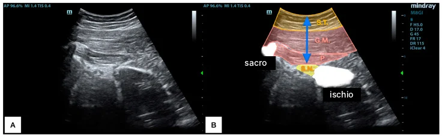

Un trigger point è un punto dolente dentro una fascia di muscolo contratta: premuto fa male lì e spesso anche a distanza. Si tratta infilandoci un ago sottile, con o senza iniettare un farmaco.
Quando si inietta un anestetico si parla di infiltrazione del trigger point; quando l'ago lavora da solo, di dry needling, cioè puntura a secco. Il dolore si riduce soprattutto nel breve periodo.

Quando si propone
La condizione tipica è un punto che il medico ritrova alla palpazione dentro una banda muscolare tesa, e che riproduce il dolore di cui ti lamenti — compreso quello che senti altrove.
Le situazioni più frequenti sono il dolore cervicale con mal di testa associato, il mal di schiena, il dolore della zona glutea, quello della mandibola. I muscoli trattati più spesso sono il trapezio, il massetere e il gluteo medio.
È un trattamento che si inserisce in un programma: serve a interrompere il dolore abbastanza da permettere di muoversi e di lavorare sulla causa del sovraccarico.
Com'è la seduta
Il medico individua il punto con le dita, fissa il tessuto fra due dita e introduce un ago sottile inclinato rispetto alla pelle. Poi lo muove avanti e indietro in più direzioni, finché la contrazione cede o il muscolo si rilassa.
Durante la manovra è comune una contrazione involontaria breve e improvvisa del muscolo: è attesa, non è un errore, ed è considerata il segno che l'ago è nel punto giusto. Molte persone riferiscono una fitta che riproduce il dolore abituale.
Se si inietta, si usa una quantità minima di anestetico locale. Nel dry needling non si inietta nulla: cambia la procedura, non il bersaglio.
Dopo la seduta, fai
- Metti in conto un indolenzimento simile a quello del giorno dopo la palestra, per uno o due giorni.
- Muovi il muscolo trattato con movimenti ampi e lenti.
- Bevi e applica calore locale, se il medico lo consiglia.
- Siediti o sdraiati se ti senti stordito subito dopo: può capitare.
Non fare
- Non caricare pesantemente il muscolo trattato lo stesso giorno.
- Non ripetere le sedute all'infinito se il dolore torna sempre uguale: significa che la causa del sovraccarico non è stata affrontata.
- Non considerarla un'alternativa agli esercizi e alla correzione delle posture di lavoro.
Quanto funziona
Il dry needling riduce il dolore nel breve periodo più del trattamento finto o del non fare nulla, e questo vale per tutte le regioni del corpo studiate.[1] È il risultato più costante che emerge da questo trattamento.
Sul medio e lungo periodo il quadro si assottiglia: il vantaggio rispetto alle altre terapie fisiche tende a ridursi, e gli studi disponibili non consentono di stabilire quanto duri l'effetto.[1]
Per l'infiltrazione con anestetico il confronto con la puntura a secco non ha prodotto una risposta netta: nessuna delle due si è imposta sull'altra in modo convincente.[2]
La conclusione pratica è che si tratta di uno strumento utile per aprire una finestra di sollievo, da usare dentro un piano più ampio e non da solo.
Quando non si fa
- Infezione della pelle o dei tessuti nel punto da trattare.
- Impossibilità di raggiungere il punto in sicurezza con l'ago.
- Rifiuto o paura intensa degli aghi: è una controindicazione a tutti gli effetti, non un capriccio.
- Allergia nota all'anestetico, quando si prevede di iniettarlo.
Richiedono cautela e una valutazione individuale la terapia anticoagulante, la gravidanza, la tendenza a formare cicatrici ipertrofiche e i punti in cui i riferimenti anatomici sono poco chiari.[3]
Effetti indesiderati
Gli effetti minori sono frequenti e previsti: indolenzimento della zona, piccoli lividi, qualche goccia di sangue all'uscita dell'ago, dolore durante la manovra. Un'altra reazione comune è il malessere con sudorazione e senso di svenimento, che passa sdraiandosi.
Nelle sintesi della letteratura questi disturbi minori compaiono in circa metà degli studi, mentre non sono riportati eventi avversi maggiori.[1]
Esiste però un rischio raro ma serio da conoscere: trattando i muscoli fra collo e torace, un ago troppo profondo può raggiungere la pleura e causare uno pneumotorace.[3] È il motivo per cui in quelle sedi contano l'esperienza di chi esegue la manovra e, quando serve, il controllo ecografico. Se nelle ore successive compaiono dolore al torace o difficoltà a respirare, è un caso da pronto soccorso.
Cosa è utile sapere prima
Il trigger point è quasi sempre un effetto, non una causa. Si forma dove un muscolo lavora troppo o male: trattarlo senza cambiare ciò che lo sovraccarica porta a ricadute regolari.
L'esame è manuale. Non esiste un esame strumentale che identifichi un trigger point: la diagnosi si fa con le dita, e dipende dall'esperienza di chi palpa.
Il dolore riferito può ingannare. Un punto nel trapezio può far male alla tempia, uno nel gluteo lungo la coscia: la sede del dolore non coincide con la sede del problema, ed è una delle ragioni per cui conviene farsi visitare prima di concludere che il problema sia dove fa male.
Da dove vengono queste informazioni
- Chys M, De Meulemeester K, De Greef I, et al. Clinical effectiveness of dry needling in patients with musculoskeletal pain: an umbrella review. Journal of Clinical Medicine 2023;12(3):1205. doi:10.3390/jcm12031205
- Debrosse M, Shergill S, Shah A, et al. Trigger point injection therapies for chronic myofascial neck and back pain: a systematic review. Interventional Pain Medicine 2022;1(3):100076. doi:10.1016/j.inpm.2022.100076
- Hammi C, Schroeder JD, Yeung B. Trigger point injection. StatPearls, StatPearls Publishing, aggiornato 2023. Fonte terziaria, usata qui per tecnica, controindicazioni e complicanze procedurali.
Scheda aggiornata il 16 novembre 2026. Prossima revisione prevista entro novembre 2028.